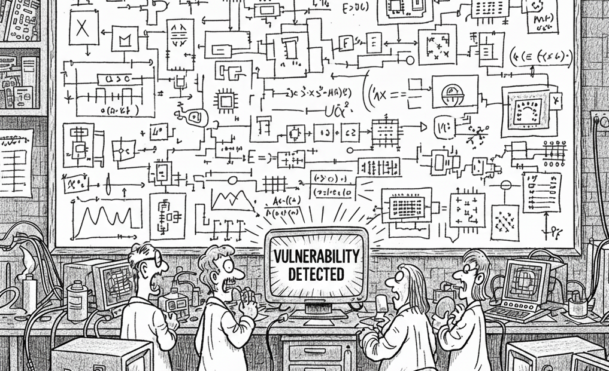

From 2017 to 2023, I researched new side-channel and speculative execution vulnerabilities in hyperscalar x86-64 CPUs. These processors rely heavily on caching and speculative execution to achieve high performance, yet these same mechanisms open the door to subtle security flaws. In multi-tenant environments, such flaws allow adversaries to observe timing and microarchitectural traces of co-located workloads, creating powerful side channels for extracting sensitive information.

As part of this work, I contributed to the discovery of Microarchitectural Data Sampling (MDS) vulnerabilities: Fallout, ZombieLoad, and LVI. These findings revealed that speculative data paths in Intel CPUs could leak secrets across isolation boundaries. The discoveries were some of the most critical CPU vulnerabilities ever discovered, prompting significant mitigations, widespread microcode updates, and fundamental changes in the way high-performance computing systems were secured, from personal computers to large-scale data centers.
I later identified Downfall, a previously overlooked variant of MDS that persisted in Intel CPUs through the 11th generation. Because MDS and Downfall affected nearly all Intel Core CPUs designed between 2015 and 2020, the estimate, based on how many such CPUs were sold, is that 900 million desktop CPUs and 50–70 million server CPUs were vulnerable. Addressing these flaws required not only microcode patches but also broad defense-in-depth strategies and fixes for newer silicon, which resulted in improved security for everyone on the internet.
I also explored the broader applicability of microarchitectural side channels through works such as PathFinder, Smack, and NVLeak. These projects demonstrated that such attacks extend across multiple components of modern CPU and memory subsystem designs, underscoring the systemic nature of microarchitectural vulnerabilities.